1Primer inicio
Al abrir el programa por primera vez, elige el idioma y cómo quieres empezar:
- Empezar en blanco: para un establecimiento nuevo. Es lo que haremos en esta guía.
- Empezar con un ejemplo: un bar de ejemplo para probarlo todo sin miedo. Después lo puedes borrar en Ajustes.
- Importar los datos del Raconet: solo aparece si el programa encuentra Raconet Gastronomia o Xoriguer TPV en este ordenador.
- Abrir una copia de seguridad: si ya tienes un archivo .json exportado.
💡 Todo se guarda solo con cada cambio. No hace falta buscar ningún botón de guardar.
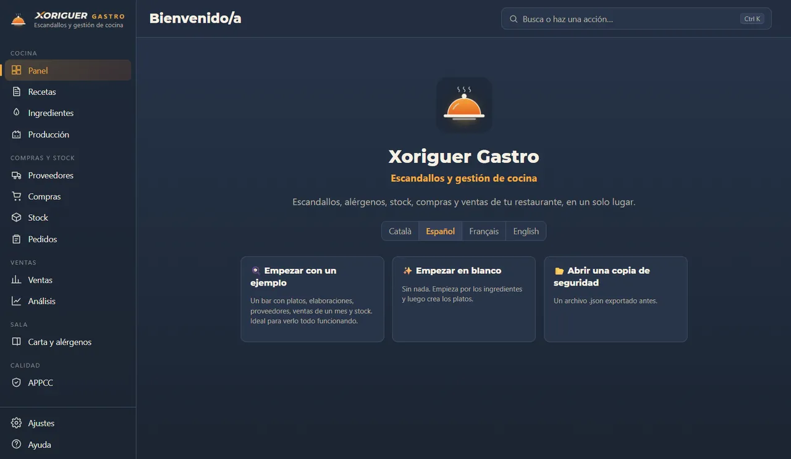
2Los datos del local
Ve a Ajustes y rellena:
- Nombre, dirección y teléfono: salen en la carta, las fichas y las etiquetas.
- IVA por defecto (10 % en hostelería) y la moneda.
- Margen objetivo por categoría: el margen bruto que quieres ganar en tapas, bocadillos, postres… El programa te dirá si cada plato llega y qué precio haría falta.
- Días de conservación por defecto de las etiquetas de producción.
💡 Los márgenes se calculan sobre el precio sin IVA, que es lo que de verdad entra en caja.
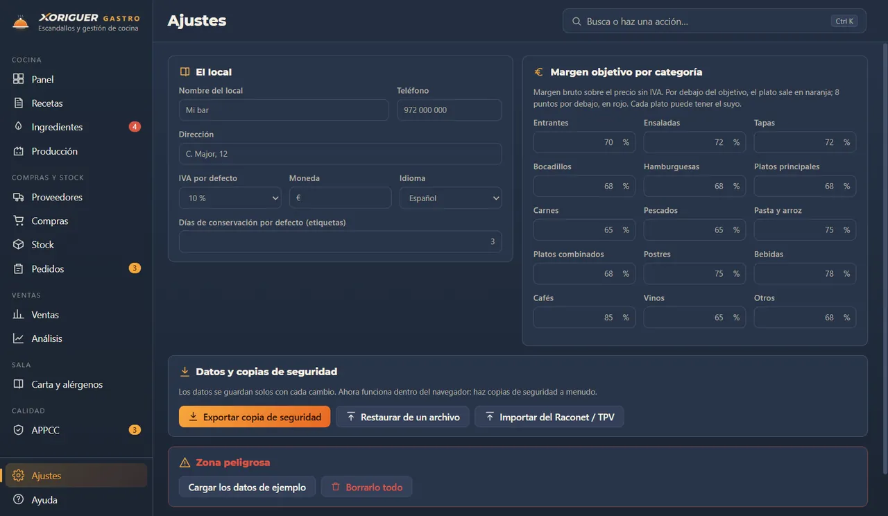
3Los proveedores
En Proveedores, crea uno por cada empresa que te sirve: nombre, teléfono (para WhatsApp), correo, persona de contacto, días de reparto y pedido mínimo.
Después los asignarás a los ingredientes y los pedidos saldrán agrupados por proveedor, listos para enviar.
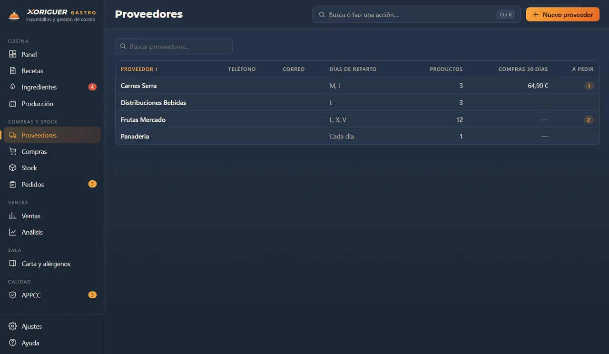
4Los ingredientes: empieza por la base
En Ingredientes → Añadir de la base tienes más de 120 productos habituales con la familia, el rendimiento, los alérgenos, la nutrición y un precio orientativo ya puestos. Marca los que usas y pulsa Añadir.
- Los que ya tienes salen en gris («ya lo tienes»), así no se duplican.
- También puedes importar un CSV con la tarifa del proveedor, o crearlos uno a uno con Nuevo ingrediente (o la tecla N).
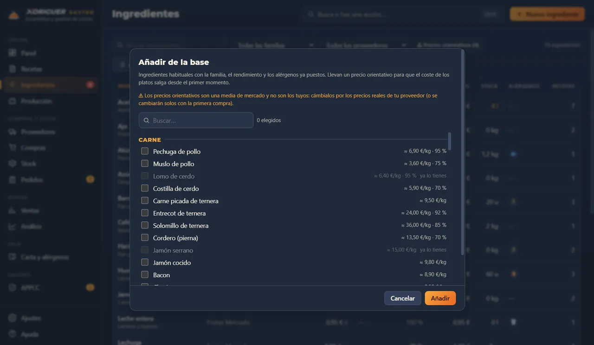
5Ponles el precio
Haz clic en cada ingrediente para abrir la ficha a la derecha:
- Unidad y precio sin IVA (€/kg, €/l o €/unidad). Si compras por cajas, la calculadora de formato lo pasa a precio por kg.
- Rendimiento: la parte que aprovechas después de limpiar (patata ≈ 80 %, merluza ≈ 55 %). El precio real sube solo.
- Peso de una pieza (opcional): para poner «2 u» en las recetas de un producto que compras por kg.
- Proveedor, dónde se guarda (cámara, congelador…) y mínimo/máximo de stock para los pedidos automáticos.
- Precios por proveedor: cada albarán guarda el precio; si otro proveedor es más barato, el panel te avisa.
💡 Los precios de la base son orientativos (una media de mercado) y salen marcados en naranja con la etiqueta «orientativo». Cámbialos por los precios reales de tu proveedor: con el filtro ⚠ Precios orientativos de la lista los encuentras todos. Si el precio ya es bueno, pulsa El precio es correcto. La primera compra de cada producto también lo cambia solo.
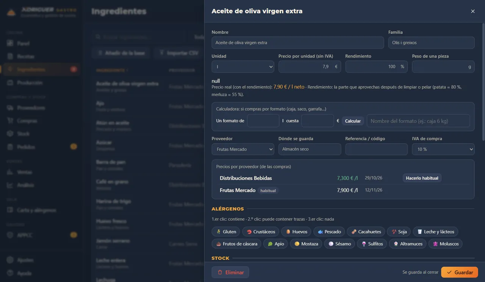
6Los platos: añádelos de la base
En Recetas → Añadir de la base hay unos 70 platos, elaboraciones (salsa brava, alioli, bechamel, sofrito…) y artículos de barra con el escandallo por ración.
- Se usan tus ingredientes si ya los tienes (aunque estén en otro idioma) y se crean los que faltan.
- Las elaboraciones de dentro se añaden solas: si eliges unas bravas, también tendrás la salsa brava.
- El coste sale de tus precios y se recalcula solo cuando cambias uno, también dentro de las elaboraciones.
💡 Atención: mientras los ingredientes tengan precio orientativo, el plato sale marcado con ≈ y un aviso, y su coste y su margen no son reales. Pon los precios de tu proveedor y todo se recalcula solo. Revisa también las cantidades y ajústalas a tus raciones.
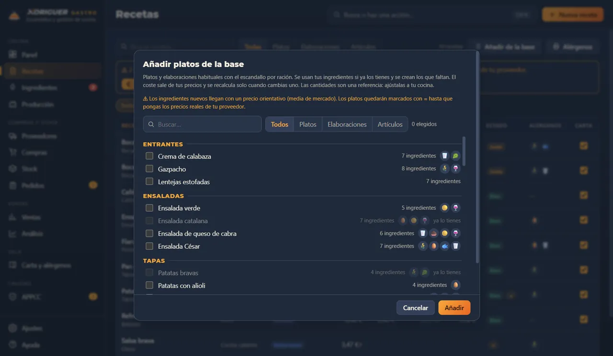
7El escandallo de cada plato
Abre un plato para ver y retocar el escandallo:
- Añade ingredientes o elaboraciones escribiendo el nombre; pon la cantidad por ración en cualquier unidad (g, kg, ml, l, u). Si no existe, lo creas ahí mismo.
- Abajo tienes el coste por ración, el food cost (verde: bien, naranja: justo, rojo: bajo) y el margen.
- Escribe el PVP con IVA o pulsa el botón del PVP sugerido para llegar al margen objetivo.
- Tamaños de ración: tapa, media, doble… cada uno con su precio y su margen.
- Partida (cocina fría, caliente, freidora, barra): ordena la hoja de producción.
- Pestañas: Elaboración (pasos, foto, descripción para la carta), Alérgenos y nutrición (calculados solos) y Producir (escalar a N raciones).
- Ficha técnica imprimible, con o sin costes.
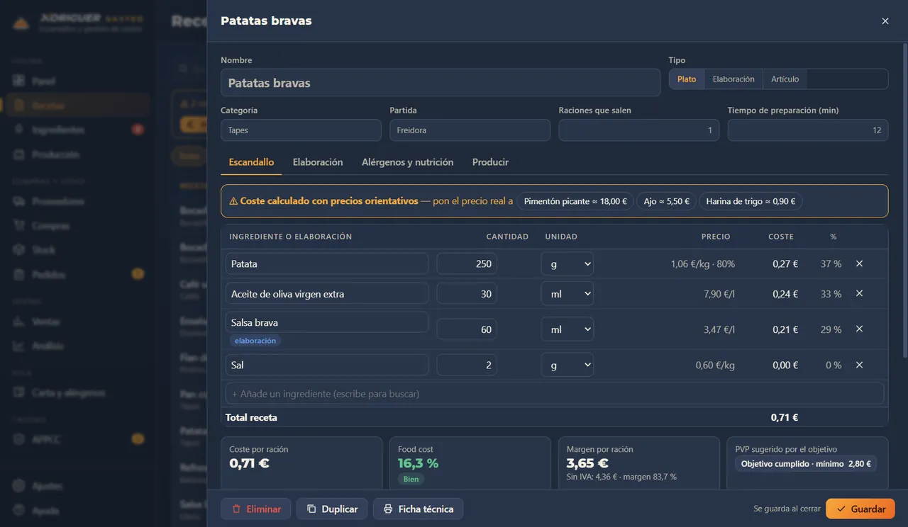
8La lista de recetas
La lista te da de un vistazo el coste, el PVP, el food cost, el margen, el estado y los alérgenos de cada plato. Haz clic en cualquier columna para ordenarla (por ejemplo, por food cost, para encontrar los platos que menos dejan).
Filtra por platos, elaboraciones o artículos, y por categoría. La casilla Carta decide si el plato sale en la carta impresa y en la digital.
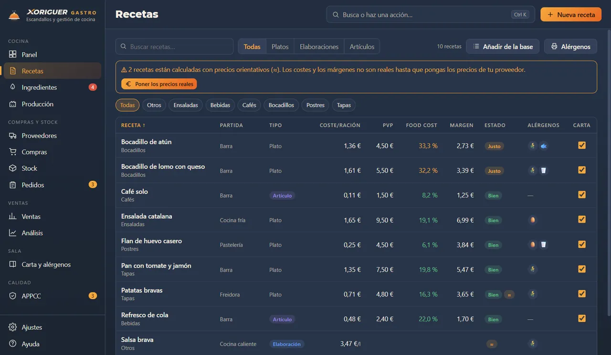
9El primer inventario
En Stock → Hacer inventario, cuenta lo que tienes y escríbelo (con Intro pasas al siguiente). Puedes ordenarlo por zona (cámara, congelador, almacén) para ir recorriéndolas, o imprimir la hoja de recuento.
Al guardar, el stock queda como lo has contado. Haz uno al principio y otro a final de mes: en Análisis → Food cost real verás cuánto has gastado de verdad comparado con lo que dicen las recetas.
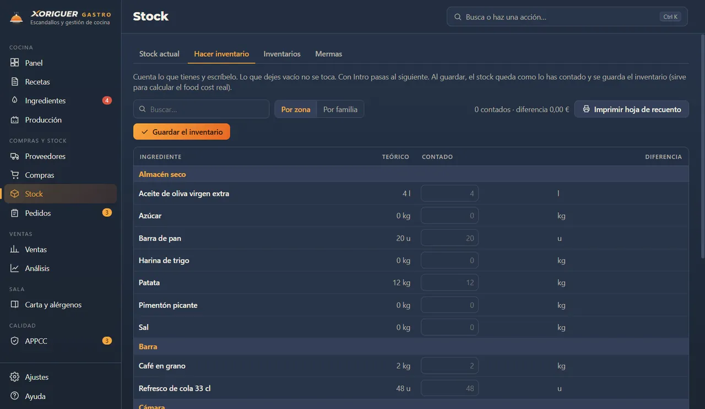
10Cada día: las compras
Cuando llega un albarán, en Compras → Nueva compra elige el proveedor y escribe los productos, la cantidad y el precio.
- El stock sube solo y el precio del ingrediente se actualiza: todos los platos que lo usan se recalculan.
- Si un precio sube, te avisa con el porcentaje.
- Las facturas sin productos (luz, alquiler) se pueden apuntar solo con el importe, para la cuenta de resultados.
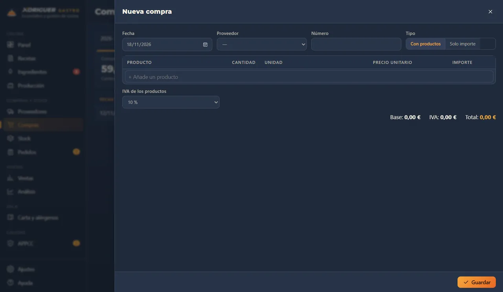
11Los pedidos
En Pedidos la lista se hace sola con lo que está por debajo del mínimo, agrupada por proveedor. Retoca las cantidades, añade lo que quieras y envíala por WhatsApp o correo con un clic.
Cuando llegue, pulsa Ha llegado → albarán y se convierte en una compra.
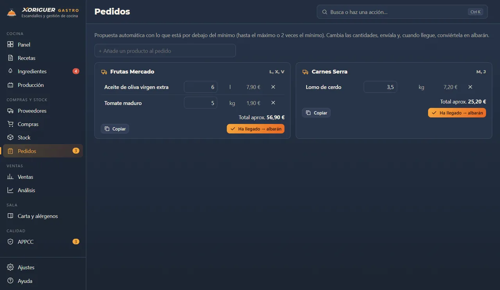
12Las ventas
En Ventas → Introducir ventas apunta las unidades vendidas de cada plato (con + y − o escribiendo), o impórtalas de Xoriguer TPV o de un CSV de tu caja.
Las ventas descuentan el stock según las recetas (si vuelves a guardar el mismo día, solo se descuenta la diferencia) y alimentan todos los análisis.
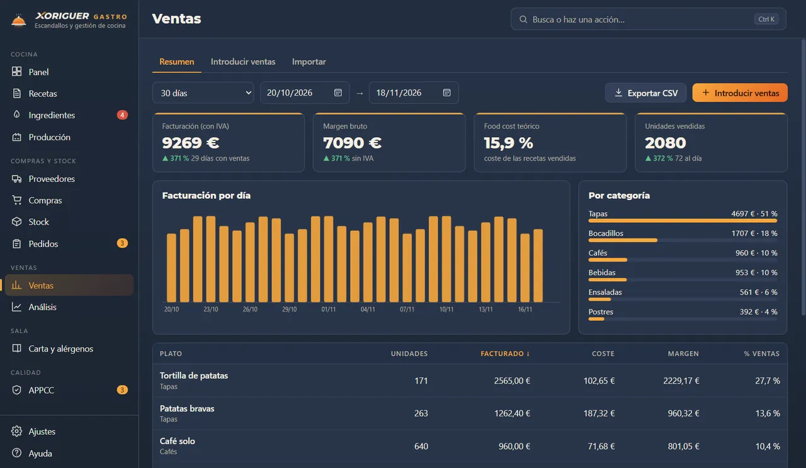
13La producción
En Producción elige qué quieres preparar y cuántas raciones (o rellénalo con las ventas de una semana). Verás todo lo que necesitas, lo que tienes y lo que falta, que puedes enviar al pedido con un botón.
La hoja de producción impresa sale agrupada por partida, con las cantidades de cada receta ya escaladas (mise en place).
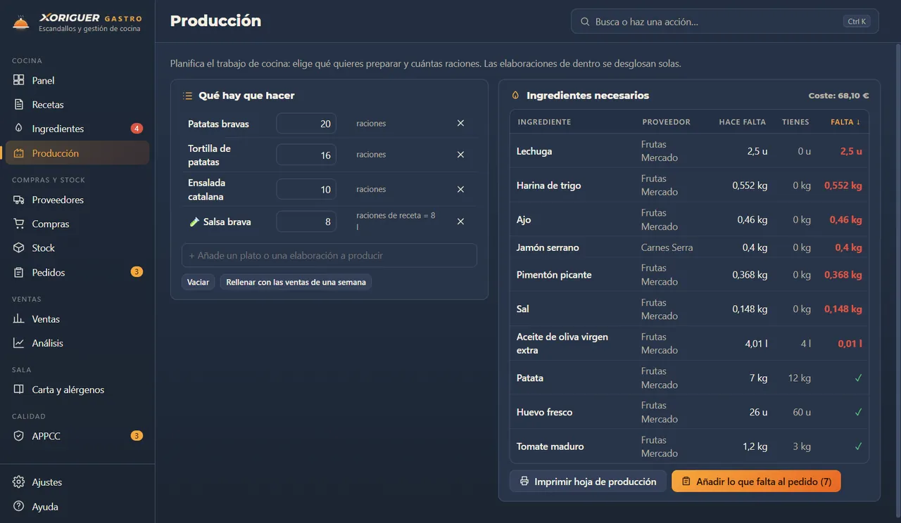
14El panel
El Panel es la pantalla de inicio: ventas de 7 días, food cost teórico, margen bruto y valor del stock, el gráfico de 30 días y los avisos: productos agotados o bajo mínimo, subidas de precio, platos bajo el margen, ingredientes sin precio, un proveedor más barato, temperaturas fuera de rango…
Haz clic en un aviso para ir directamente donde hay que actuar.
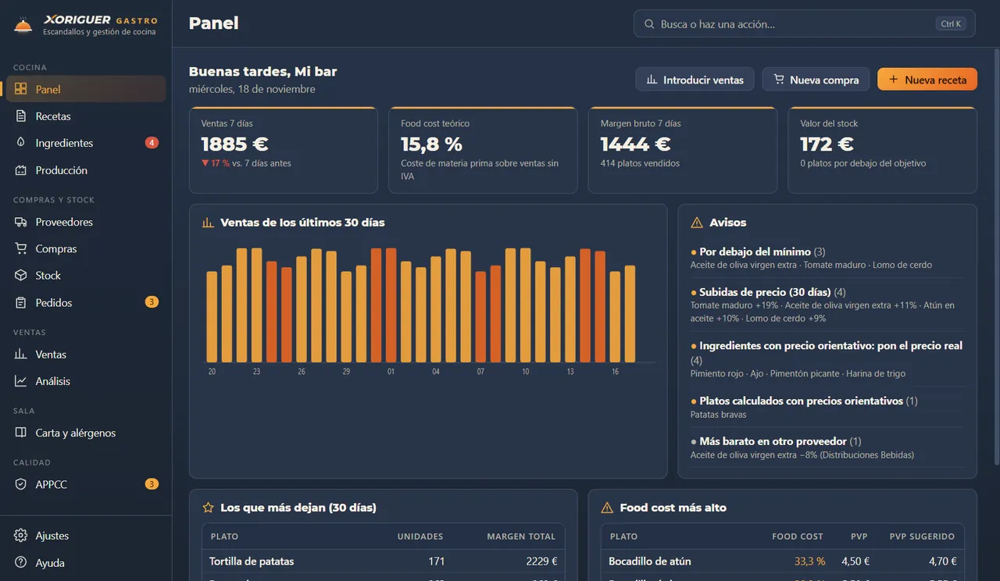
15Analizar el negocio
En Análisis tienes:
- Ingeniería de menú: cada plato es ⭐ estrella (se vende mucho y deja mucho), 🐴 caballo de batalla, ❓ enigma o 🐶 perro, con qué hacer con cada uno.
- Food cost real entre dos inventarios, comparado con el teórico: la diferencia son mermas, raciones demasiado grandes o pérdidas.
- Evolución de precios y simulador («si el aceite sube un 20 %, ¿qué platos pierden margen y a qué precio los tendría que poner?»).
- Cuenta de resultados con los costes fijos y el punto de equilibrio.
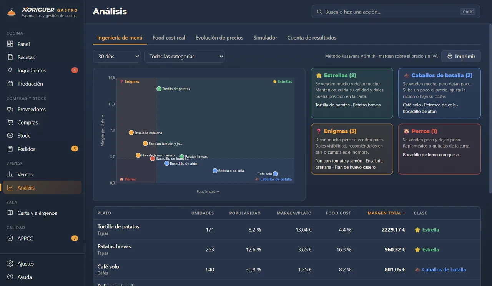
16La carta y los alérgenos
En Carta y alérgenos:
- Carta imprimible en tres estilos (clásico, moderno, pizarra), con alérgenos y descripciones.
- Matriz de los 14 alérgenos (Reglamento UE 1169/2011), obligatoria y calculada sola a partir de las recetas.
- Carta QR: guarda la carta digital (una página para el móvil en 4 idiomas, con filtro de alérgenos), súbela a tu web e imprime las tarjetas QR para las mesas.
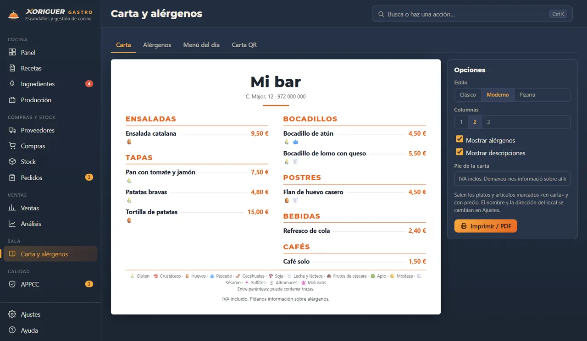
17El menú del día
En Menú del día escribe los primeros, segundos y postres (o elígelos de las recetas) y el precio. Si el nombre coincide con una receta, el programa calcula el coste por comensal, el food cost, el margen y el precio sugerido.
Indica cuántos comensales esperas y pulsa Añadir a la producción: sabrás qué preparar y qué comprar. Imprímelo para la pizarra o las mesas.
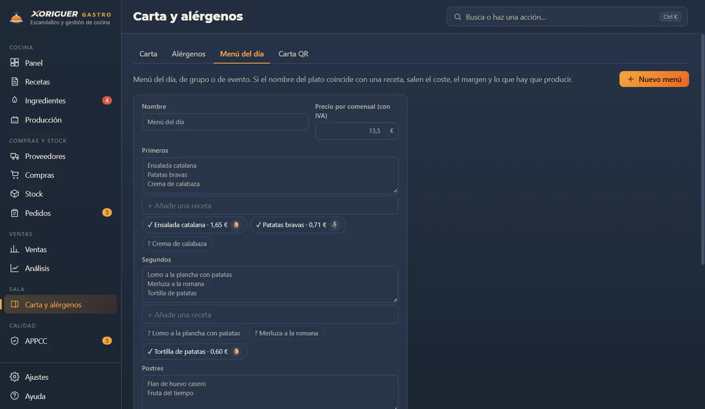
18El APPCC
En APPCC registra cada día las temperaturas de neveras y congeladores (si está fuera de rango, te pide la acción correctora), imprime el registro del mes para la inspección y haz etiquetas de producción con fecha, caducidad, lote y alérgenos.
En la pestaña Equipos pones cada nevera con su rango correcto.
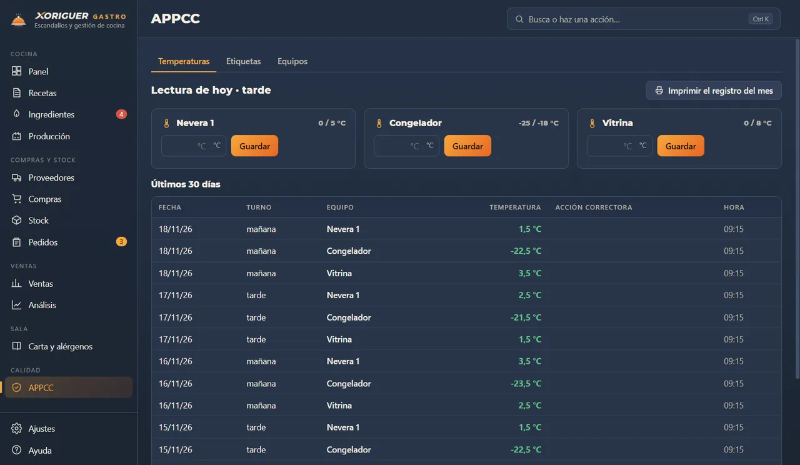
19Trucos para ir rápido
- Ctrl + K: busca cualquier plato, ingrediente o proveedor, o haz una acción («hacer inventario», «nueva compra»…).
- N: crea un elemento nuevo en la pantalla donde estás. /: va al buscador.
- Ctrl + Z: deshace el último cambio (también desde el aviso de abajo a la derecha).
- Ctrl + 1…9: cambia de pantalla. Esc: cierra el panel.
- Los datos están en %APPDATA%\XoriguerGastro con una copia automática cada día (30 días). En Ajustes puedes exportar una o restaurarla.
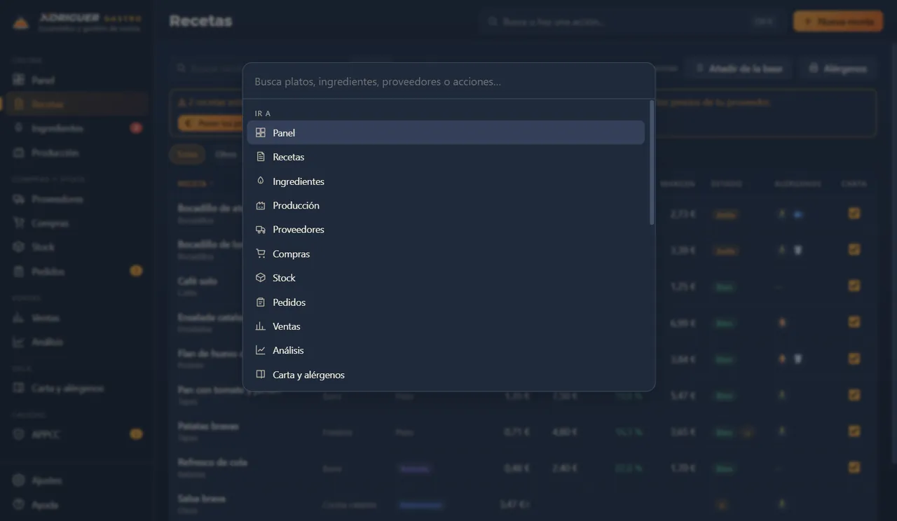
✓Lista de comprobación
- Nombre, dirección, IVA y márgenes objetivo en Ajustes
- Proveedores creados
- Ingredientes añadidos de la base o de un CSV, con precio, proveedor y stock mínimo
- Platos añadidos de la base o creados, con las cantidades revisadas y el PVP
- Alérgenos revisados (matriz impresa a la vista de los clientes)
- Primer inventario hecho
- Neveras y congeladores dados de alta en el APPCC
- Carta impresa y/o carta digital con QR en las mesas